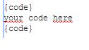

All,
there is a new Raspberry Pi 2 out in the wild 
It comes with 900Mhz quad core and 1 GB of ram: http://www.raspberrypi.org/products/raspberry-pi-2-model-b/
https://www.youtube.com/watch?x-yt-cl=85114404&x-yt-ts=1422579428&v=Xo8RT8Wpv6w#t=364
-Marcus
{kind=link}
{kind=link}
|
What an upgrade! I am going to try one of these with XBMC and a IR blaster. Make that dumb TV on the patio a little smarter.. |
|
Windows 10 and Ubuntu prepare for IoT battle on Raspberry Pi 2 |
|
Migrated my home controller (version 2.1.0) from a regular Raspberry Pi to the new Raspberry Pi 2. The unscientific observations I've made so far:
However, there is some negative behavior as well. After rebooting the Pi a couple of times, the controller simply stopped working. The startup log of a successful process looked like this: -------------------------------------------------------------------- DEPLOYING NEW CONTROLLER RUNTIME... -------------------------------------------------------------------- INFO 2015-02-06 17:57:48,498 : Initialized event processor : Drools Rule Engine Whereas after a Pi reboot it simply stops in the middle without an error: -------------------------------------------------------------------- DEPLOYING NEW CONTROLLER RUNTIME... -------------------------------------------------------------------- INFO 2015-02-06 17:59:28,958 : Initialized event processor : Drools Rule Engine Digging into this, also having some concerns with Pi 2 being really eager to corrupt the memory card compared to the original one. First used a Transcend 16GB micro SD card, now swapped to Sandisk. Curiously, also the Transcend reports itself as a Sandisk card |
|
KNX-debug.log has some curious errors: INFO 2015-02-06 19:06:09,637 (KNX): KNX IP interface hostname set to 'null' |
|
Hello Jani, Are the KNX errors related to RPI 2 only, and not present in version 2.1.0 in general (on RPI 1) ? |
|
Hi Juha, Can't confirm. The problem only manifested together with the migration process to the RPi2 which involved a lot of system restarts. The original RPi has been running stable for well over a year and I did not encounter the issue there. I'd hesitate to subject the original installation to this kind of testing since it's my backup in case the RPi2 turns out unstable However, this other thread on the forum seems to have the same issue on different hardware: http://openremote.org/pages/viewpage.action?pageId=23596331 |
|
Yes, saw the other thread and yours that's why I was asking. Sounds like your issue resolved itself – frequent restarts may be a cause since there's a fairly lengthy timeout on KNX connections if they're not cleaned out properly and I'm not sure our KNX implementation cleans itself up correctly under all cases. |
|
Yes, I re-installed the controller and synced from the designer a few hours later, and things have been back to normal for now, even scheduled rules fire normally. All the observations about snappier performance are still valid. The installation is running on the default Java that comes with Raspbian. |
|
Jani, which version of java did you install? i have an rasppi 2 and did the installation according to this totorial: http://www.openremote.org/display/docs/OpenRemote+2.0+How+To+-+Install+Controller+on+Raspberry+Pi java version "1.6.0_35" OpenJDK Runtime Environment (IcedTea6 1.13.7) (6b35-1.13.7-1~deb7u1+rpi1) OpenJDK Zero VM (build 23.25-b01, mixed mode) rules will work but when i will sync my design with the controller it failes, this logfile will be created: # # A fatal error has been detected by the Java Runtime Environment: # # Internal Error (os_linux_zero.cpp:285), pid=2272, tid=1181217904 # fatal error: caught unhandled signal 11 # # JRE version: 6.0_35-b35 # Java VM: OpenJDK Zero VM (23.25-b01 mixed mode linux-arm ) # Derivative: IcedTea6 1.13.7 # Distribution: Debian GNU/Linux 7.8 (wheezy), package 6b35-1.13.7-1~deb7u1+rpi1 # Failed to write core dump. Core dumps have been disabled. To enable core dumping, try "ulimit -c unlimited" before starting Java again # # If you would like to submit a bug report, please include # instructions how to reproduce the bug and visit: # http://icedtea.classpath.org/bugzilla # --------------- T H R E A D --------------- Current thread (0x01b94c10): JavaThread "HTTP-Thread-2" daemon [_thread_in_Java, id=2504, stack(0x46500000,0x46680000)] Stack: [0x46500000,0x46680000], sp=0x465c13d4, free space=772k Java frames: 0x4667cfd0: stack_word[2] = 0x00000001 0x4667cfd4: stack_word[1] = 0x000000c4 0x4667cfd8: stack_word[0] = 0x5dbf8788 0x4667cfdc: istate->_thread = 0x01b94c10 0x4667cfe0: istate->_bcp = 0x6fde8596 (bci 14) the list is even longer than this. could you help me out? |
|
Just for my curiosity. |
|
i have the free version , i have also installed java 8: root@raspberrypi:/opt/ejre1.6.0_38# java -version java version "1.8.0_60" Java(TM) SE Runtime Environment (build 1.8.0_60-b27) Java HotSpot(TM) Client VM (build 25.60-b23, mixed mode) root@raspberrypi:/opt/ejre1.6.0_38# but drools wont work with that, syncing with the designer will work. should i try another java 8 version? |
|
i tried with: root@raspberrypi:~# java -version java version "1.8.0" Java(TM) SE Runtime Environment (build 1.8.0-b132) Java HotSpot(TM) Client VM (build 25.0-b70, mixed mode) root@raspberrypi:~# but drools wont work either ERROR 2015-09-07 12:17:49,908 : Error in rule definition 'modeler_rules.drl' : wrong class format java.lang.RuntimeException: wrong class format i have also tried java jre6 but it won't even load: root@raspberrypi:~# update-alternatives --config java There are 4 choices for the alternative java (providing /usr/bin/java). Selection Path Priority Status ------------------------------------------------------------ 0 /opt/ejre1.6.0_38/bin/java 1058 auto mode 1 /opt/ejre1.6.0_38/bin/java 1058 manual mode 2 /opt/jdk1.8.0_60/bin/java 1 manual mode 3 /usr/lib/jvm/java-6-openjdk-armhf/jre/bin/java 1057 manual mode * 4 /usr/lib/jvm/jdk-8-oracle-arm-vfp-hflt/bin/java 1 manual mode Press enter to keep the current choice[*], or type selection number: 1 update-alternatives: using /opt/ejre1.6.0_38/bin/java to provide /usr/bin/java (java) in manual mode root@raspberrypi:~# java -version java: error while loading shared libraries: libjli.so: cannot open shared object file: No such file or directory root@raspberrypi:~# |
Sorry, I can't help you there since I have no record of what I did use at the time |
|
tnx anyway maybe someone else has the same problem |
|
Hi Rob, |
|
Patrick, i did install slackware onto my sdcard and ive copied openremote to it. i only need the java on to it, is version jre6 enough? as i used it before on a synology installation. is this the correct way to install java?: http://www.unixmen.com/install-java-slackware-14-1/ or do i need a JDK? which version did you install and how? |
|
Hi Rob, The java install is indeed based on http://www.unixmen.com/install-java-slackware-14-1/ Download ejre-1_6_0_38-fcs-b05-linux-arm-vfp-eabi-headless-13_nov_2012.gz from Oracle Extract jdk from jdk.tar.gz and copy (tar -zxvf ...) it to /root/java/jdk You need to edit the file jdk.SlackBuild for this specific install (it was a bit of reverse engineering but it worked). Edit jdk.sh : Now make jdk.Slackbuild executable : Add the java folder to your profile |
|
im half way there, does jdk.sh needs to be edited? #!/bin/sh export JAVA_HOME=/usr/lib/java export MANPATH="${MANPATH}:${JAVA_HOME}/man" export PATH="${PATH}:${JAVA_HOME}/bin:${JAVA_HOME}/jre/bin" first i edited jdk.Slackbuild: tar xvf $CWD/ejre-1_6_0_38-fcs-b05-linux-arm-vfp-eabi-headless-13_nov_2012.gz and when i run ./jdk.Slackbuild i got one 1 error: tar: ejre1.6.0_38/COPYRIGHT: time stamp 2012-11-14 06:02:42 is 1352867433.022913601 s in the future ejre1.6.0_38/README tar: ejre1.6.0_38/README: time stamp 2012-11-14 06:02:42 is 1352867433.022121257 s in the future ejre1.6.0_38/THIRDPARTYLICENSEREADME.txt tar: ejre1.6.0_38/THIRDPARTYLICENSEREADME.txt: time stamp 2012-11-14 06:02:42 is 1352867433.021422611 s in the future tar: ejre1.6.0_38/lib/arm/client/libjsig.so: time stamp 2012-11-14 05:17:36 is 1352864727.020565528 s in the future tar: ejre1.6.0_38/lib/arm/client: time stamp 2012-11-14 05:17:23 is 1352864714.02019683 s in the future tar: ejre1.6.0_38/lib/arm: time stamp 2012-11-14 05:17:36 is 1352864727.019798497 s in the future tar: ejre1.6.0_38/lib: time stamp 2012-11-14 05:17:36 is 1352864727.019472351 s in the future tar: ejre1.6.0_38: time stamp 2012-11-14 06:02:42 is 1352867433.01917558 s in the future mv: cannot stat 'jdk1.7.0_45': No such file or directory root@raspi-or:~/java/jre# ive edited jdk.Slackbuild again and changed these lines:
PRGNAM=ejre
VERSION=${VERSION:-6u38}
BUILD=${BUILD:-1}
TAG=${TAG:-_SBo}
DVER=1.6.0_$(printf $VERSION | cut -du -f2)
now this error occurs: future tar: ejre1.6.0_38/lib/arm/client/libjsig.so: time stamp 2012-11-14 05:17:36 is 1352864001.043342992 s in the future tar: ejre1.6.0_38/lib/arm/client: time stamp 2012-11-14 05:17:23 is 1352863988.042288617 s in the future tar: ejre1.6.0_38/lib/arm: time stamp 2012-11-14 05:17:36 is 1352864001.041323253 s in the future tar: ejre1.6.0_38/lib: time stamp 2012-11-14 05:17:36 is 1352864001.040366951 s in the future tar: ejre1.6.0_38: time stamp 2012-11-14 06:02:42 is 1352866707.039314138 s in the future ls: cannot access /root/java/jre/profile.d/ejre*: No such file or directory chmod: cannot access '/tmp/SBo/package-jdk/etc/profile.d/*': No such file or directory root@raspi-or:~/java/jre# do i miss something? |
|
I would like to post the script in the files jdk.SlackBuild and jdk.sh. How can I publish the scripts like you did with jdk.sh? |
|
put it here like this  |
|
This is the adapted jdk.SlackBuild #!/bin/sh # Copyright 2008, 2009, 2010, 2011 Patrick J. Volkerding, Sebeka, MN, USA # All rights reserved. # # Redistribution and use of this script, with or without modification, is # permitted provided that the following conditions are met: # # 1. Redistributions of this script must retain the above copyright # notice, this list of conditions and the following disclaimer. # # THIS SOFTWARE IS PROVIDED BY THE AUTHOR ``AS IS'' AND ANY EXPRESS OR IMPLIED # WARRANTIES, INCLUDING, BUT NOT LIMITED TO, THE IMPLIED WARRANTIES OF # MERCHANTABILITY AND FITNESS FOR A PARTICULAR PURPOSE ARE DISCLAIMED. IN NO # EVENT SHALL THE AUTHOR BE LIABLE FOR ANY DIRECT, INDIRECT, INCIDENTAL, # SPECIAL, EXEMPLARY, OR CONSEQUENTIAL DAMAGES (INCLUDING, BUT NOT LIMITED TO, # PROCUREMENT OF SUBSTITUTE GOODS OR SERVICES; LOSS OF USE, DATA, OR PROFITS; # OR BUSINESS INTERRUPTION) HOWEVER CAUSED AND ON ANY THEORY OF LIABILITY, # WHETHER IN CONTRACT, STRICT LIABILITY, OR TORT (INCLUDING NEGLIGENCE OR # OTHERWISE) ARISING IN ANY WAY OUT OF THE USE OF THIS SOFTWARE, EVEN IF # ADVISED OF THE POSSIBILITY OF SUCH DAMAGE. VERSION=1_6_0_38 DVER=1.6.0_38 ARCH=arm # only determines the lib path locations JAVA_ARCH=${JAVA_ARCH:-arm} # or i586 if you want the 32bit version BUILD=${BUILD:-1} # if [ "$JAVA_ARCH" = "x64" ]; then # LIB_ARCH=amd64 # else # LIB_ARCH=i386 # fi #if [ "$ARCH" = "x86_64" ]; then # LIBDIRSUFFIX="64" #else LIBDIRSUFFIX="" LIB_ARCH="arm" #fi CWD=$(pwd) TMP=${TMP:-/tmp} PKG=$TMP/package-ejre rm -rf $PKG mkdir -p $TMP $PKG cd $PKG mkdir -p usr/lib${LIBDIRSUFFIX} cd usr/lib${LIBDIRSUFFIX} tar xvf $CWD/ejre-1_6_0_38-fcs-b05-linux-arm-vfp-eabi-headless-13_nov_2012.gz # chown -R root.root $PKG # yes yes | sh $CWD/ejre-${VERSION}-linux-${JAVA_ARCH}.bin || exit 1 mkdir -p $PKG/etc/profile.d for file in $(ls $CWD/profile.d/*) ; do cat $file | sed -e "s#lib/java#lib${LIBDIRSUFFIX}/java#" \ > $PKG/etc/profile.d/$(basename $file) done chown -R root.root $PKG find $PKG \ \( -perm 777 -o -perm 775 -o -perm 711 -o -perm 555 -o -perm 511 \) \ -exec chmod 755 {} \; -o \ \( -perm 666 -o -perm 664 -o -perm 600 -o -perm 444 -o -perm 440 -o -perm 400 \) \ -exec chmod 644 {} \; chmod 755 $PKG/etc/profile.d/* ( cd $PKG/usr/lib${LIBDIRSUFFIX} mv ejre${DVER} java || exit 1 ln -sf java ejre${DVER} ) || exit 1 # mkdir -p $PKG/usr/lib${LIBDIRSUFFIX}/mozilla/plugins # ( cd $PKG/usr/lib${LIBDIRSUFFIX}/mozilla/plugins # ln -sf /usr/lib${LIBDIRSUFFIX}/java/jre/lib/${LIB_ARCH}/libnpjp2.so libnpjp2.so #) ( cd $PKG/usr/lib${LIBDIRSUFFIX} ln -sf ./java/lib/${LIB_ARCH}/client/libjvm.so . ) mkdir -p $PKG/install cat $CWD/slack-desc > $PKG/install/slack-desc cat << EOF > $PKG/install/doinst.sh # Clean up a potential upgrade mess caused by changing the # installation directory to /usr/lib${LIBDIRSUFFIX}/java/: if [ -L usr/lib${LIBDIRSUFFIX}/java ]; then rm -rf usr/lib${LIBDIRSUFFIX}/java # mkdir -p usr/lib${LIBDIRSUFFIX}/java/man # mkdir -p usr/lib${LIBDIRSUFFIX}/java/jre/lib/${LIB_ARCH}/server mkdir -p usr/lib${LIBDIRSUFFIX}/java/lib/${LIB_ARCH}/client # mkdir -p usr/lib${LIBDIRSUFFIX}/java/jre/javaws # mkdir -p usr/lib${LIBDIRSUFFIX}/java/jre/bin mkdir -p usr/lib${LIBDIRSUFFIX}/java/bin # mkdir -p usr/lib${LIBDIRSUFFIX}/mozilla/plugins fi if [ -L ControlPanel ]; then rm -f ControlPanel fi if [ -L ja ]; then rm -f ja fi if [ -L javaws ]; then rm -f javaws fi if [ -L libjsig.so ]; then rm -f libjsig.so fi # End cleanup. EOF # Install the desktop/mime files: #mkdir -p $PKG/usr/share/{applications,icons,mime} #cp -a $PKG/usr/lib${LIBDIRSUFFIX}/java/jre/lib/desktop/applications/* \ # $PKG/usr/share/applications/ #cp -a $PKG/usr/lib${LIBDIRSUFFIX}/java/jre/lib/desktop/icons/hicolor \ # $PKG/usr/share/icons/ #cp -a $PKG/usr/lib${LIBDIRSUFFIX}/java/jre/lib/desktop/mime/packages \ # $PKG/usr/share/mime/ # We ship the package unmodified, so we do not compress manpages. cd $PKG /sbin/makepkg -l y -c n $TMP/ejre-$(echo $VERSION | tr - _)-$ARCH-$BUILD.txz and jdk.sh #!/bin/sh export JAVA_HOME=/usr/lib/java export MANPATH="${MANPATH}:${JAVA_HOME}/man" export PATH="${PATH}:${JAVA_HOME}/bin:${JAVA_HOME}/ejre/bin" |
|
yes that did the thick root@raspi-or:/tmp# java -version java version "1.6.0_38" Java SE Embedded Runtime Environment (build 1.6.0_38-b05, headless) Java HotSpot(TM) Embedded Client VM (build 20.13-b02, mixed mode) root@raspi-or:/tmp# drools is working, syncing works also |
|
how about the startup script? i did:
#!/bin/sh
#
# /etc/rc.d/rc.local: Local system initialization script.
#
# Put any local startup commands in here. Also, if you have
# anything that needs to be run at shutdown time you can
# make an /etc/rc.d/rc.local_shutdown script and put those
# commands in there.
cd /openremote/bin
./openremote.sh start
in /etc/rc.d/rc.local i did a chmod +x openremote.sh but it does not autostart |
|
I have no access to my RPI and cannot check this in datail right now, but you could try the following. I copied the Openremote folders in /opt and used the script as described at http://www.openremote.org/display/docs/OpenRemote+2.0+How+To+-+Install+Controller+on+Raspberry+Pi I called the script OpenRemoteStart and added the line JAVA_HOME=/usr/lib/java #!/bin/sh ### BEGIN INIT INFO # Provides: openremote # Required-Start: $remote_fs $syslog # Required-Stop: $remote_fs $syslog # Default-Start: 2 3 4 5 # Default-Stop: 0 1 6 # Short-Description: Start daemon at boot time # Description: Enable service provided by daemon. ### END INIT INFO JAVA_HOME=/usr/lib/java cd /opt/openremote/bin # Modify this line to your OpenRemote Controller installation path case "$1" in stop) echo "Stopping OpenRemote Controller..." /opt/openremote/bin/openremote.sh stop > /dev/null 2>&1 & ;; start) # start OpenRemote in background mode /opt/openremote/bin/openremote.sh start > /dev/null 2>&1 & echo "OpenRemote Controller started..." ;; restart) $0 stop sleep 5 $0 start ;; *) echo "usage: $0 { start | stop | restart}" >&2 exit 1 ;; esac Put the OpenRemoteStart script into /etc/rc.d and chmod +x OpenRemoteStart Edit rc.local in /etc/rc.d and add the line : If it still does not start, you perhaps need to use chown to change ownership of a number of files? |
|
in the end i got it working on the first boot it says "OpenRemote Controller started..." on the startup but nothing happends untill i changed ownership of these files and directories: after a few mins after reboot ive got this error: INIT: Id "s0" respawning too fast: disabled for 5 minutes this can be fixed by out this line in /etc/inittab like: #s0:12345:respawn:/sbin/agetty 115200 ttyS0 vt100 also i had the wrong homepath to java in /etc/profile :
export JAVA_HOME="usr/lib/java/"
must be: export JAVA_HOME=/usr/lib/java otherwise Openremote does not start furthermore i have made a script for removing the catalina.out every 24hours. rm /openremote/logs/catalina.out > catalina-info.txt 2>&1 && echo succes || echo fail be sure your path to openremote is correctly, i placed my openremote folder directly into the root. rule "rules start" salience 90 when eval(true) then execute.command("remove.catalina.out"); end you can bind a costum sensor to your command: rule "remove catalina.out succes" when CustomState(source == "rm.catalina.out", value == "on") then log("Logfile Catalina.out met succes verwijderd"); end rule "remove catalina.out fail" when CustomState(source == "rm.catalina.out", value == "off") then log("Verwijderen mislukt: Logfile Catalina.out niet aanwezig"); end i also had a clock issue, everytime after a reboot is been done the clock goes back to 1 Jan 1970.
hwclock: Cannot access the Hardware Clock via any known method.
hwclock: Use the --debug option to see the details of our search for an access method.
root@raspi-or:~#
and on command hwclock --debug :
root@raspi-or:~# hwclock --debug
hwclock from util-linux 2.21.2
hwclock: Open of /dev/rtc failed: No such file or directory
No usable clock interface found.
hwclock: Cannot access the Hardware Clock via any known method.
root@raspi-or:~#
i don't know how to fix this one, on google i can find some pages which say that the kernel is not compiled correctly? my temporary solution is to add an extra line to rc.local with: ntpdate time.nist.gov set this as the first line before openremote starts so that your log files will have the correct time. if anyone knows how to fix the clock issue please let me know |
|
Rob, I haven't installed any additional java packages. The system is running stock java that comes with Raspbian: java version "1.8.0" And drools fire just fine, I have scheduled KNX light scenes and a watering cycle that have been running stable for months now. |
|
Jani, maybe i have another openremote controller, which one are you using? |
|
Jani, which version of drools do you have (in openremote/webapps/controller/WEB-INF/lib)? |
|
OpenRemote 2.1.1, Drools 5.1.1 |